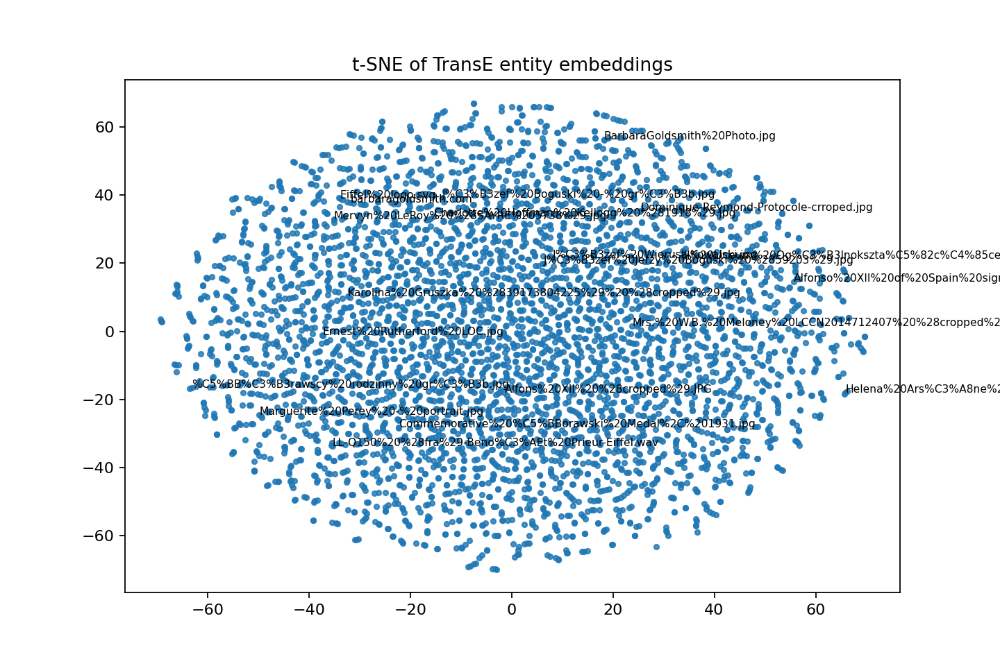

This project implements a full Knowledge Graph (KG) pipeline across four phases: information extraction (IE), private KB construction and expansion, reasoning plus knowledge graph embeddings (KGE), and a SPARQL-based RAG chatbot. The pipeline starts from web pages, extracts entity-relation triples with spaCy and dependency-based heuristics, builds RDF data with alignment to Wikidata using owl:sameAs, expands the graph using linked neighbors, and trains KGE models (TransE and ComplEx) for link prediction. The system produced a final expanded graph with 39,457 triples and 4,041 typed entities, and generated complete KGE artifacts (train/valid/test, metrics, t-SNE, nearest neighbors). The RAG module is implemented and smoke-tested structurally; full LLM-answer evaluation is pending local Ollama runtime.
The domain combines scientific biographies and institutions from seed pages such as Marie Curie, Albert Einstein, CERN, University of Oxford, United Nations, and New York City. The project goals were: - Convert noisy HTML into structured relational data. - Build and expand a private KB with semantic interoperability via Wikidata alignment. - Compare symbolic reasoning and embedding-based inference. - Build a question-answering interface that maps natural language to SPARQL.
en_core_web_trf target; fallback to en_core_web_sm).Ambiguity was measured by checking when the same surface form appears with multiple NER labels.
Marić labeled as PERSON, ORG, and GPEMaria labeled as PERSON, ORG, and GPEGuterres labeled as PERSON, ORG, and GPEThese examples illustrate common IE noise from Wikipedia-style text, where surnames or partial mentions are context-sensitive.
owl:sameAs when confidence/normalization criteria are met.owl:sameAs): 93rdf:type subjects): 4,041A symbolic rule path is implemented in reasoning_kge.py using OWLReady2-style workflow. In this run, symbolic reasoning demo was skipped due local runtime package availability warning, but the code path is integrated and reusable.
Artifacts: - data/kge/train.txt - data/kge/valid.txt - data/kge/test.txt - data/kge/metrics.csv - data/kge/nearest_neighbors.csv - data/kge/tsne.png
| Model | MRR | Hits@10 |
|---|---|---|
| TransE | 0.0187 | 0.0515 |
| ComplEx | 0.0023 | 0.0035 |
In this dataset and short-epoch setup, TransE outperformed ComplEx on both ranking metrics.
The t-SNE projection is shown below:

Observation: the embedding cloud is broad with weakly separated micro-regions, indicating noisy heterogeneous relations and mixed lexical/entity namespaces.
Nearest-neighbor sample from data/kge/nearest_neighbors.csv: - http://barbaragoldsmith.com nearest neighbors include http://example.org/kg/America (0.4965), http://example.org/kg/Police_Athletic_League (0.4825) - Neighbor quality indicates some semantic signal but also schema/noise artifacts from expanded web entities.
Implemented in src/rag_chatbot.py: - Schema summarization of classes/predicates/prefixes - Prompting local LLM (Ollama model, e.g., gemma:2b) to generate SPARQL - Query execution with RDFLib - Self-repair loop for malformed/failed SPARQL - CLI interaction loop for demo
http://localhost:11434 was not running in the final pipeline runUse at least 5 questions and complete this table after starting Ollama:
| Question | Baseline (No RAG) | SPARQL-RAG Answer | Correct? | Notes |
|---|---|---|---|---|
| Who is Marie Curie? | ||||
| Which organization is linked to Einstein in the KB? | ||||
| What entities are connected to CERN? | ||||
| Is New York City typed as a place in the KG? | ||||
| What are the top related entities for United Nations? |
Primary noise sources: - NER ambiguity on short or partial mentions. - Open-web extraction introduces non-canonical entity URIs. - Expanded neighbor retrieval adds long-tail predicates not always task-relevant.
Practical impact: - Higher relation diversity (762 predicates) increases graph coverage. - But noise reduces embedding separability and can lower link-prediction precision.
Rule-based reasoning: - Strengths: transparent, auditable, deterministic for explicit logic constraints. - Weaknesses: brittle with sparse/noisy schemas and incomplete facts.
Embedding-based reasoning: - Strengths: can infer latent links from distributional patterns. - Weaknesses: less interpretable and sensitive to data quality/noise.
Conclusion: A hybrid approach is most practical: use symbolic rules for high-confidence constraints and KGE for candidate generation/ranking under incompleteness.
source .venv/bin/activate
EPOCHS=2 MAX_EXPAND=50000 SKIP_RAG=0 ./run_all.shrun_all.sh executes all phases and checks all required artifacts with PASS/FAIL. In the latest run, all required non-RAG artifacts passed.
After starting Ollama:
ollama pull gemma:2b
python src/rag_chatbot.py --model gemma:2bThen fill Section 5.3 with observed outputs.
Code modules: - src/crawler.py - src/kb_builder.py - src/reasoning_kge.py - src/rag_chatbot.py
Core data artifacts: - data/raw/crawler_output.jsonl - data/processed/extracted_knowledge.csv - data/kb/initial_kb.ttl - data/kb/alignment.ttl - data/kb/ontology.owl - data/kb/expanded_kb.nt - data/kge/train.txt - data/kge/valid.txt - data/kge/test.txt - data/kge/metrics.csv - data/kge/nearest_neighbors.csv - data/kge/tsne.png
{kind=link}